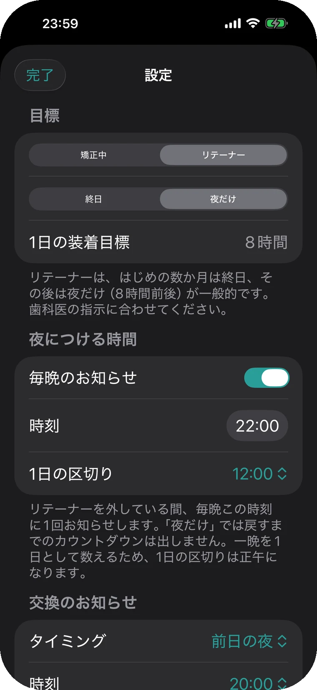
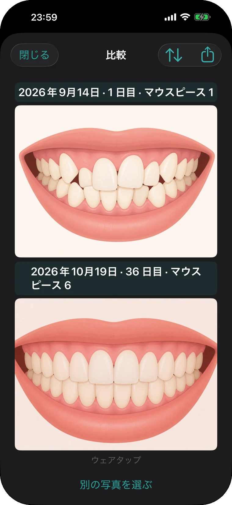
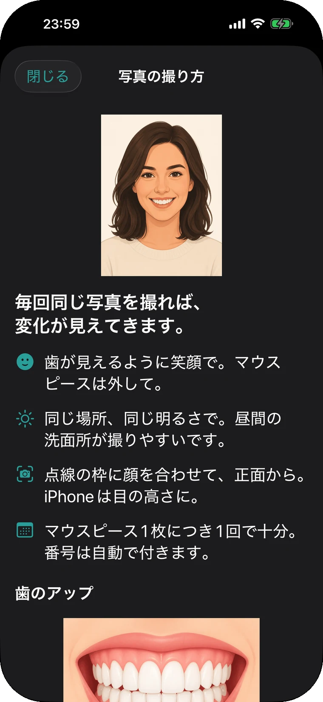
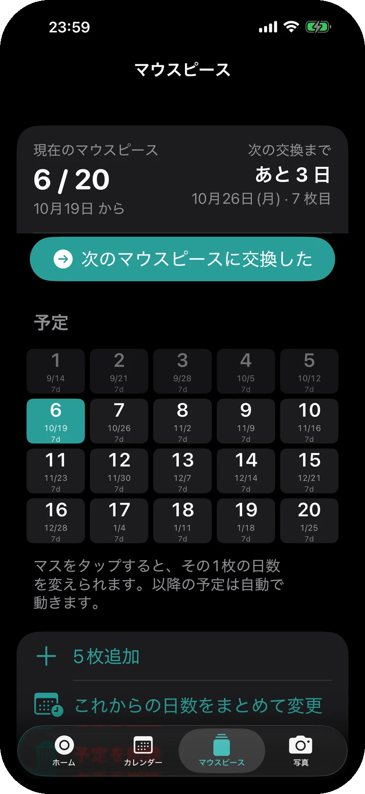

戻すのも、ロック画面から。
歯みがきを終えたら、ロック画面のカードで「戻す」を押すだけ。アプリを開くと、今日あと何分外せるかが出ています。目標の22時間から逆算した数字です。
Proロック画面のカードは Pro の機能です。
マウスピース矯正の、外していた時間を数えて、戻す時間を知らせる iPhone アプリです。ロック画面やウィジェットから記録できるので、食事のたびにアプリを開かなくてすみます。
無料ではじめられます。Pro は買い切りで、7日間のお試しつき。
スクロールすると、時計が進みます。朝ごはんで外した 7:12 から、ある1日をたどります。
歯みがきを終えたら、ロック画面のカードで「戻す」を押すだけ。アプリを開くと、今日あと何分外せるかが出ています。目標の22時間から逆算した数字です。
Proロック画面のカードは Pro の機能です。
昼に外したのに、押すのを忘れていた。12:35 に気づいて「外す」を押し、−15分。記録は 12:20 からになります。−5分から−60分、時刻を指定しても戻せます。
おやつはウィジェットで。1回押せば外す、もう1回で戻す。コントロールセンター、アクションボタン、Siri からも同じように記録できます。
Proウィジェットなどからの記録は Pro の機能です。
夕食が長引いて、今日外せる2時間を使い切りました。その時刻に通知が届き、通知のボタンからそのまま戻せます。無料版は1回、Pro は戻したと記録するまで1〜30分おきに繰り返します。
この日の装着は21時間53分。目標に7分届かず、カレンダーでは「惜しい」の色になりました。達成・惜しい・未達を色で見分けられ、月と直近7日の平均も出ます。
リテーナーに移ったら、設定でモードを切り替えるだけ。夜だけつける人には、毎晩決めた時刻に1回お知らせします。これまでの記録も写真も、そのまま残ります。

歯の写真を「笑顔」と「歯のアップ」で撮り分けて、同じ種類の2枚を並べて比べられます。撮影のときはガイドの枠が出るので、毎回同じ構図で撮れます。



矯正中は1日に何度も外します。そのたびにアプリを探して開くのは、三日で面倒になります。だから、押せる場所を増やしました。
Pro の印がついたものは、7日間のお試しでも使えます。
外す・戻すの記録、カレンダー、マウスピースの交換予定、歯の写真と比較、iCloud のバックアップ、CSV の書き出しは、無料でもすべて使えます。Pro は買い切りで、これから追加される機能も含まれます。サブスクリプションも広告もありません。
¥3,000Pro・買い切り。7日間のお試しつき。
お試しが終わっても、自動では課金されません。
| Pro で増えること | 無料 | Pro |
|---|---|---|
| 戻す時間のお知らせ | 1日1回 | 戻すまで繰り返す |
| ロック画面・ウィジェット・コントロールセンター・ショートカットからの記録 | — | あり |
| ロック画面とダイナミックアイランドの残り時間 | — | あり |
| Apple Watch からの記録 | — | あり |
| 1日の区切りの時刻を変える | — | あり |
| これから追加される機能 | — | あり |
ウェアタップには運営者のサーバーがありません。記録と写真は iPhone の中と、あなた自身の iCloud に保存され、運営者が見ることはできません。
アカウント登録なしメールアドレスも名前も要りません。
計測も広告もなし利用状況の計測、広告、クラッシュ報告の仕組みを入れていません。
機種変更しても戻る同じ Apple ID なら、アプリを入れ直すだけで記録と写真が戻ります。
お問い合わせには、開発者本人が日本語でお返事します。「ここが使いにくい」「この機能がほしい」といった声は、アップデートで形にしていきます。ご連絡は、ページ下の「お問い合わせ」か X の @weartap から。
使えます。どのメーカーのマウスピース（アライナー）でも、外した時間を数えるしくみは同じです。
変えられます。はじめは22時間です。担当の歯科医師に言われた時間に合わせてください。
初期設定では 0:00 で日付が変わります。Pro なら、1日の区切りを 4:00 などに変えて、夜ふかしの分を前の日に数えられます。
使い始めた時刻より前は、つけていたか分からないため数えていません。その日だけ、残りの時間に合わせて目標を按分しています。翌日からは設定した目標になります。
されません。お試しは自動で終わり、無料版に戻ります。続けて使う場合だけ、Pro を購入してください。
違います。外していた時間を記録してお知らせするタイマーで、治療についての助言はしません。装着時間の目標や治療の進め方は、担当の歯科医師の指示に従ってください。
21:53この日の装着